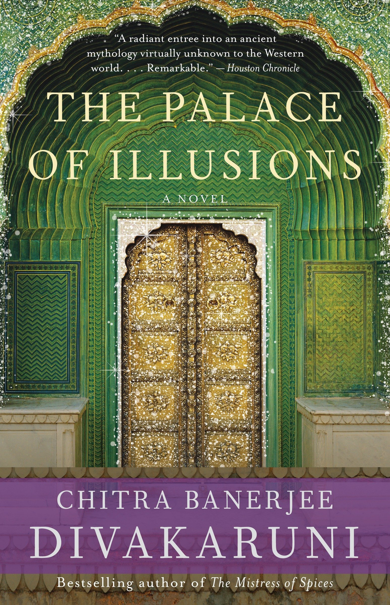
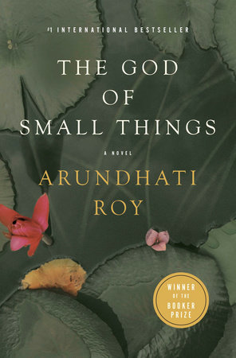

Click to Know more
Amish Tripathi’s trilogy on Lord Shiva consists of three books.
The entire series engages the reader in such a way that one cannot help but get involved with Shiva and Sati’s entourage as they set sail on their quest to banish all evil.

Click to Know more
The Palace of Illusions takes us back to a time that is half history, half myth, and wholly magical. Narrated by Panchaali, the wife of the legendary Pandavas brothers in the Mahabharat, the novel gives us a new interpretation of this ancient tale.
Click to Know more
The doorkeepers of Vaikuntha are the twins, Jaya and Vijaya.One keeps you in Swarga; the other raises you into Vaikuntha.In Vaikuntha there is bliss forever, in Swarga there is pleasure for only as long as you deserve. What is the difference between Jaya and Vijaya?the Mahabharata originally known as Jaya, Devdutt Pattanaik seamlessly weaves into a single narrative plots from the Sanskrit classic

Click to Know more
Tenali Ramakrishna was a poet and an advisor to King Krishnadevaraya. He was known for his amazing wit, humour, and extraordinary intelligence. All the stories of Tenali Raman tell us about his relationship with the king, his wisdom and his problem-solving capabilities
Click to Know more
City girl Nooni is surprised at the pace of life in her grandparents' village in Karnataka.Things get exciting when Nooni stumbles upon an ancient fabled stepwell right in the middle of a forest.Join the intrepid Nooni on an adventure of a lifetime in this much-awaited book by Sudha Murty that is heart-warming, charming and absolutely unputdownable.
Click to Know more
Grandma’s Bag Of Stories contains the stories that the grandmother narrates to entertain the seven young children. The tales are magical, and replete with captivating characters. Moral lessons are subtly blended in with the tales to impress the differences between what is right and what is wrong.The illustrations by Priya Kurian make the book more interesting and keep the young readers engrossed.

Click to Know more
The God of small things is a debut novel of Arundhati Roy which was well received all over the world. The story is all about India and family issues. The writer has written about social discrimination, forbidden love, and male chauvinism.

Click to Know more
The white tiger is a debut novel of the writer which describes the life of a poor man and his dreams of becoming rich one day. The novel covers all the social issues. This book is all about the journey of a man to become rich and how in this journey, he forgets about humanity. Arvind Adiga won booker prize for his debut novel.
Click to Know more
The heart-warming story of a young girl who struggles against all odds, when life as she knows it is disrupted What would you do if the perfect life you have is torn asunder?A gripping story of the pains of growing up, the strength afforded by faith and the indestructibility of the spirit, here is an inspiring story for modern readers.
Click to Know more
Five thousand years ago, there came to earth a magical being called Krishna, who brought about innumerable miracles for the good of mankind. Humanity despaired of its fate if the Blue God were to die but was reassured that he would return in a fresh avatar when needed in the eventual Dark Age—the Kaliyug.
Click to Know more
This inspiring tale provides a step-by-step approach to living with greater courage, balance, abundance, and joy.The Monk Who Sold His Ferrari tells the extraordinary story of Julian Mantle, a lawyer forced to confront the spiritual crisis of his out-of-balance life. On a odyssey to an ancient culture, he discovers powerful, wise, and practical lessons
Click to Know more
Do love stories ever die?. . . How would you react when a beautiful person comes into your life, and then goes away from you . . . forever?Not all love stories are meant to have a perfect ending. I Too Had a Love Story is one such saga.